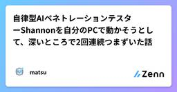
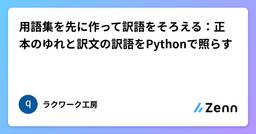
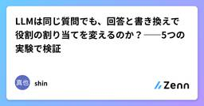
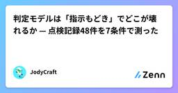

Zennの「大規模言語モデル」のフィード
フィード

自律型AIペネトレーションテスターShannonを自分のPCで動かそうとして、深いところで2回連続つまずいた話
Zennの「大規模言語モデル」のフィード
今日のネタ元GitHub Trending(TypeScript)に挙がっていた以下のOSSを検証した。KeygraphHQ/shannon(Shannon Lite、AGPL-3.0)Webアプリ/APIのソースコードを解析して攻撃経路を特定し、ブラウザ自動操作とCLIツールで実際に攻撃を再現した上で、動作するPoCが取れた脆弱性のみを報告する自律型AIペネトレーションテストツールである。READMEの冒頭には「Shannon actively executes exploits. Run it only against applications and enviro...
5時間前

Mistral Large 4オープン化と56億ドルハックに学ぶ2025年の技術戦略
Zennの「大規模言語モデル」のフィード
海外のエンジニアコミュニティで、AIモデルのオープン重み化と大規模セキュリティインシデントという対極的な2つの重大ニュースが同時に大きな話題を集めています。最先端モデルの重みを完全公開した「Mistral Large 4」の登場と、過去最大級となる56億ドル規模の流出資金が追跡された「Binanceハッカーのアドレス分析」です。本記事では、これら海外の最新トレンドをピックアップし、日本のエンジニアが実務で直面する「LLMの内製化・オンプレ運用」と「堅牢なセキュリティアーキテクチャ設計」にどのように活かすべきか、具体的なコードと設計判断を交えて解説します。 何が発表されたのか海外コミ...
5時間前

同意スコープでエージェントの「ツール」を絞る：ユーザー許可型メモリAPIの設計メモ
Zennの「大規模言語モデル」のフィード
この記事についてユーザー本人のメモリ（メール、ファイル、他のAIアシスタントとの会話）に、第三者のアプリが「ユーザーの許可した範囲だけ」アクセスできるAPIを作っています。この記事では、その許可範囲を プロンプトではなく、エージェントに渡すツールの集合で強制する という設計について、考えたことと実装のポイントをまとめます。 前提：許可は「ソースごと × 3段階」ユーザーはアプリを接続するとき、データソースごとに次の3段階から選びます。スコープアプリが得られるものOff何もなしKG抽出済みの事実（エンティティ・関係・時系列の事実）だけRaw...
6時間前

用語集を先に作って訳語をそろえる：正本のゆれと訳文の訳語をPythonで照らす
Zennの「大規模言語モデル」のフィード
手順書を翻訳AIで訳すと、同じ物の訳がばらばらになることがあります。「フィルター」が、ある行では filter、別の行では strainer。読む人には、別の物に見えます。法務省の機械翻訳の調査報告書（令和4年12月）にも、課題の1つに「訳語の不統一」が出てきます。同じ法令の中の同じ語に、別の訳語が使われることです。調べたのは法令の英訳で、手順書ではありません。それでも、この種の誤りは語を数えれば見つかります。目で探すより、機械に向いた仕事だと筆者は考えています。そこで、用語集（CSV）を先に作ります。訳す前に日本語の正本の書き方のゆれ（「食洗機」と「食器洗浄機」など）を挙げ、翻訳に...
7時間前

Claude Codeの未解決バグ、自分のPCで起きる127件を先回りで台帳にした
Zennの「大規模言語モデル」のフィード
はじめに結論: Claude Code 公式リポジトリの不具合報告のうち、私の環境（Windows 11 + Desktop アプリ + hooks 多数）に関係しそうな656件を仕分けたところ、未解決で「この PC でも起きうる」ものが127件ありました。そのうち63件は、私の手元のルール・メモ・ナレッジのどこにも書かれていませんでした。ただし報告文だけでの判定はあてになりません。127件から9件を実機で試すと、再現したのは2件だけで、しかも1件は既に知っていたバグの別番号でした。この記事では、バグ報告を「踏んでから調べる」のをやめて「踏む前に台帳にする」ために作った仕分けの...
8時間前

LLMは同じ質問でも、回答と書き換えで役割の割り当てを変えるのか？――5つの実験で検証
Zennの「大規模言語モデル」のフィード
はじめに私は個人で、大規模言語モデル（LLM）の挙動や評価方法を研究しています。今回は、Claude Sonnet 4.6を対象とした5つの実験について、2026年9月のプレプリント（v2）の内容を紹介します。本研究の問いは、引数の役割が明示されていない入力に対して、LLMが表明する役割の割り当ては、問いかけ方によらず一定なのかというものです。検証した条件では、役割の割り当ても「決められない」と回答する割合も、問いかけ方によって異なりました。ただし、これはモデル内部にある「本当の解釈」の変化を直接示したものではありません。観測される応答が、評価に使う指示や選択肢の提示方法に依存...
9時間前

スキルを入れる前に「前提スキルとCLI」を確かめる: 依存センサスから
Zennの「大規模言語モデル」のフィード
Claude Code にスキルを1つ入れて試したら、エージェントが gws: command not found で止まった。あるいは ../gws-shared/SKILL.md を読もうとして、そんなファイルはないと言われた。スキルを何本か触っていると、こういう場面に一度は当たると思います。原因はたいてい単純で、そのスキルが「別のスキル」や「特定のCLI」が先に入っていることを前提に書かれているからです。この記事では、その前提をインストール前に SKILL.md から読み取る方法を、カタログ全体の数字と実際のファイルを使って整理します。!この記事は、私たちが運営する Skil...
10時間前

AI時代の学び方に迷っている人へ: 言葉の理解を自分のものにする7つのベクトル操作
Zennの「大規模言語モデル」のフィード
はじめに: AIで学ぶことへの4つの迷いAIが出てきてから、学び方を決めかねている人は多いと思う。その迷いは、だいたい次の4つに分けられる。考える力を手放してしまう恐れ: 考えることをAIに任せ続けると、自分で問いを立てたり、粘り強く考えたりする力が衰えるのではないか。どこまで頼ってよいのかが分からない。楽をすることへの後ろめたさと、非効率への焦り: 「自力でやるべきだ」という価値観と、「使わないのは時代遅れだ」という圧力の板挟みになる。「分かったつもり」への疑い: AIの説明で分かったとき、それが自分の理解なのか、AIがいないと何もできないのか、区別がつきにくい。自...
12時間前

判定モデルは「指示もどき」でどこが壊れるか — 点検記録48件を7条件で測った
Zennの「大規模言語モデル」のフィード
!この記事の前提Jev・d1は、文章を渡すと「はい/いいえ」や段階を確率つきで返す判定特化のモデルです。自由文ではなく、決められた型（noul / score / choice）の判定結果を返します。題材は、製造業の設備点検記録48件です。前回の記事⑧と同じデータ・同じ3問を使い、入力に「指示もどき」を混ぜたとき、自動化してよい件数がどう変わるかを測りました。測定日は2026年10月31日、モデルはJev 1.13・d1・d1-ultraです（条件はJevが7つ、d1が4つ、d1-ultraが7つ）。Jev 1.14は10月14日から提供されていますが、前回⑧と同じ1.13で比...
14時間前

Claude Agent SDK を使ってみた。何往復もの作業におすすめ
Zennの「大規模言語モデル」のフィード
Agent SDK を 405 回動かした記録で、使ったトークン(AI が文章を数える単位)の量と請求の内訳を並べました。Sonnet の入力トークンの内訳(100% = 約 4.0 億)読み ████████████████████████████ 93.3%書き込み ██ 6.7%Sonnet の請求の内訳(100% = $183.62)出力 █████████████ 43.0%書き込み ███████████ 36.5%読み ██████ 20.4%キャッシュ読みは入力の 93% を占めますが、請求では 20% でした。請求の 8 割は出力と書き込み...
14時間前
NLPで用いるPerplexityとは
Zennの「大規模言語モデル」のフィード
LLMの性能評価を行う際に良く用いられる指標としてPerplexity（パープレキシティ、和訳で「混同度」や「分岐度」）というものがあります。Perplexityは、主に自然言語処理（NLP）や音声認識などで用いられる、言語モデルの性能を評価する指標です。 概要以下にその主な特徴を説明いたします。 1. 基本的な意味Perplexity は、言語モデルが「次に出現する単語をどれだけ確実に予測できるか」を数値化したものです。直訳的には「当惑させられる度合い」という意味で、モデルが次の単語を予測する際に、平均的にどれだけ選択肢に「困る（困惑する）」かを表しています。 2. ...
15時間前
OpenAI互換APIの接続をcurlで切り分ける：Base URL・モデルID・ストリーミング
Zennの「大規模言語モデル」のフィード
OpenAI互換APIをチャットクライアントや自作アプリに接続するとき、APIキーを入力しただけでは動かないことがあります。接続先のパスが重複している、モデルIDが違う、通常のJSONとストリーミングを同じ方法で読んでいる、といった原因を分けて確認する必要があります。この記事では、最終的なURL → 認証 → モデルID → 通常のチャット → ストリーミングの順に、curlとPython標準ライブラリで確認します。TaoDockの公開ドキュメントに記載されたエンドポイントを例にしますが、切り分けの順序は他のOpenAI互換サービスでも使えます。対象はChat Completions...
15時間前

AIではじめるセルフQA：要求をMECEにしよう
Zennの「大規模言語モデル」のフィード
サマリーAI全盛の今、QAの方だけでなく、エンジニアもQAする時代が本格的になってきました。ただ、AI は計画に書かれたとおりに実装します。計画に書かれていないことは実装しません。コードベースを読んで初めて見つかる要求の穴があります。ですので、この記事ではその穴を実装の前に見つける方法を紹介します。自分はこれを define-done という Agentスキルにしています。題材のリポジトリは https://github.com/YasuakiOmokawa/skills で公開しています。 計画どおりに実装しても壊れる例次の例はスキルの評価用に作った架空のものです。利用...
15時間前

LLMエージェント基盤のシステム設計 #3 ツール実行（タイムアウト・権限・リトライ・重複実行の防止）
Zennの「大規模言語モデル」のフィード
!この記事は連載「LLMエージェント基盤のシステム設計」（全5回）の第3回です。エージェントランタイム（Harness）コンテキスト管理ツール実行 ← この記事信頼性評価と可観測性各回とも「要件 → 規模の見積もり → 全体設計 → 詳細設計 → 運用と発展」の順に説明します。文中の規模や性能の数値は、設計を検討するための仮の値です。実測値ではありません。 はじめにモデルはツールの実行を要求するだけで、実際に実行するのはHarnessです。ツールには、検索のように副作用のないものと、メール送信や決済のように副作用のあるものがあります。副作用のないツールは、失...
16時間前

今日の技術トレンド
Zennの「大規模言語モデル」のフィード
!2026年9月21日の技術トレンドでは、AI領域において単なる「ツール利用」から自主的に動作する「エージェンティックAI」や「Managed Agents」への移行が加速しています。一方、Claude Opus 5を用いた攻撃シナリオやNext.jsの重大な脆弱性修正に見られるよう、AIとWeb基盤双方でのセキュリティ対応が急務となっています。Pythonエコシステムでは、OpenAIによるAstral買収の影響を受けつつ、uvやRuffを中心とした高速ツールの定着が進んでいます。 1. AIエージェント基盤の深化： Managed Agentsと自己進化型システムAI/LL...
17時間前

2026年後半のLLM動向: この数か月の進化を振り返る
Zennの「大規模言語モデル」のフィード
ここ数週間で、気になるモデルの発表が続いています。OpenAIからは、Sonnet 5.5に近い能力を半分のAPI単価で使えるGPT-6.1 Terra。Googleからは、GPT-6 AstraやClaude Opus 5.5と競うGemini 4 Argonに続き、約1か月でさらに性能を伸ばしたGemini 4 Carbonです。中国からも、Opus 5.5やAstraに迫る性能をうたうKimi K3.1 Proが出てきました。この数か月でだいぶ動きがあったので、まず最新の発表で現在地を確認し、そこまでの移り変わりを振り返ってみます。そのあとに、私のコーディング環境と思考がどう変わ...
18時間前

temperature 0 なのに出力が変わる — MoE/dense 3モデルで KV キャッシュ状態の決定性を実測する
Zennの「大規模言語モデル」のフィード
NVIDIA GB10 搭載機で Ollama を回し、temperature 0 の出力が実行ごとに変わる件を測りました。以前の運用記事で「おまけの実験」として短く触れた内容の完全版です。この記事では手順・生ハッシュ・状態遷移・再現スクリプトを全部出します。結論を先に書くと、真のランダムな揺れは観測されず、出力は「モデル・入力・KV キャッシュ状態」の決定的関数に見えました。 同じ状態なら bit 単位で再現し、状態が違うと確定的に別の出力になります。MoE だけの現象でもありませんでした。環境は次のとおりです。Lenovo ThinkStation PGX（GB10 / 12...
18時間前

なぜAIは10ターン目から指示を忘れるのか？暴走を止める「AGENTS.md」と「SKILL.md」の黄金分割
Zennの「大規模言語モデル」のフィード
なぜAIは「10ターン目」から暴走するのかClaude Code、Gemini、Antigravity、Cursorといった自律型AIコーディングエージェントを実務に導入した開発者の多くが、ある共通の現象に頭を抱えています。プロジェクト立ち上げ直後は、あなたが書いた AGENTS.md（あるいは CLAUDE.md / GEMINI.md）の規約を忠実に守っていたはずのエージェントが、運用開始から数週間が経ち、ルールファイルが充実してくるにつれて、次のような**「意図しない暴走」**を起こし始めるのです。「実装前にまず方針を提示して合意を取ること」と書いてあるのに、質問しただ...
18時間前

テスト出力の垂れ流しでコンテキストが汚染される！「生ターミナル出力」vs「構造化JSON差分フィルタ」で入力94.1%削減
Zennの「大規模言語モデル」のフィード
!本記事は、SNS（X / Threads）や海外エンジニアコミュニティで提唱されている「AIコーディングエージェントの実践設計パターン」を、完全オフラインの隔離サンドボックスVM上で 同一モデル・同一初期課題（非公開テスト20ケース）を用いて定量A/Bテストした実証シリーズ（AI Labo 検証シリーズ E16） です。👉 全実験の比較ランキング＆黄金パターン総集編はこちら[!IMPORTANT]検証結論（E16 実機検証パス：20/20 独立テスト全通過・VM220 正常停止確認済）コーディングエージェントの最大のトークン消費源「CLI テスト出力汚染」の実証: エ...
19時間前

LLM に「嘘を書くな」と頼むだけにしない：メルマガ自動生成で出力をコードで検査する4つの関所
Zennの「大規模言語モデル」のフィード
会社のサイトにある記事を材料に、AI がメルマガ1号分を書く「書かないメルマガ」というサービスを作っています（Next.js・Supabase・Claude）。この手のサービスで一番怖いのは、AI が材料にない数字や日付を「それらしく」書いてしまうことです。メルマガは一度送ったら取り消せません。割引率を1つ間違えるだけで、使ってくれている会社の信用を落とします。プロンプトに「材料にないことは書かない」と書くのは当然として、それだけでは保証になりません。そこで、AI の出力が送信されるまでに、コードで止める関所を4つ置きました。どこまで止められて、どこからは止められないのかも含めて書き...
20時間前